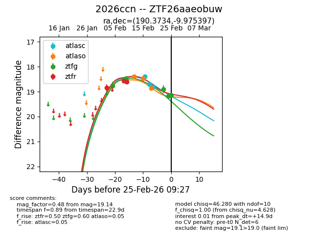
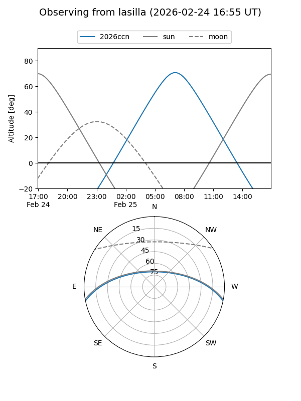
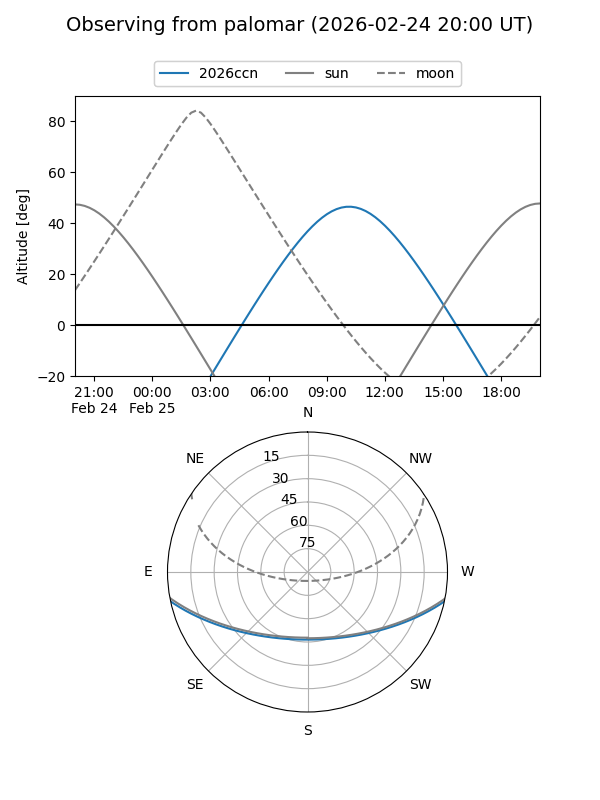
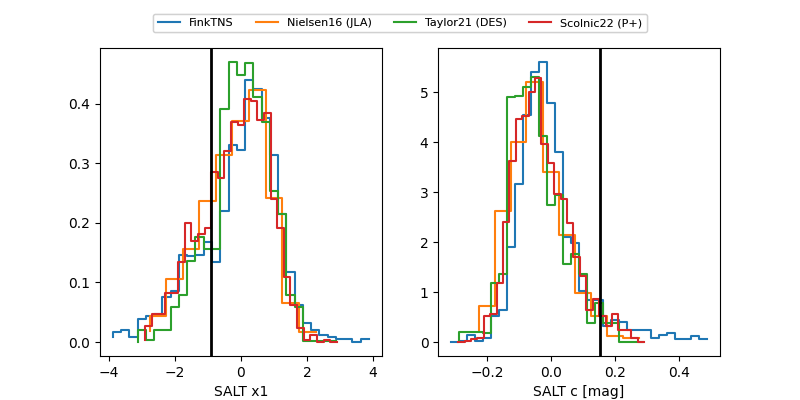

2026ccn
Target 2026ccn at 2026-02-25 09:28
Aliases and brokers:
FINK: link
Lasair: link
ALeRCE: link
TNS: link
YSE: link
alt names
ZTF26aaeobuw (ztf,fink_ztf)
2026ccn (tns,yse)
Coordinates:
equatorial (ra, dec) = 190.3734,-9.97540
equatorial (HMS+DMS) = 12:41:29.62,-09:58:31.43
galactic (l, b) = (298.8784,+52.81807)
Flags:
Photometry:
last atlasc=18.79, atlaso=18.87, ztfg=19.14, ztfr=18.60
3 atlasc, 3 atlaso, 6 ztfg, 3 ztfr detections
Lightcurve

Visibility


Additional plots
